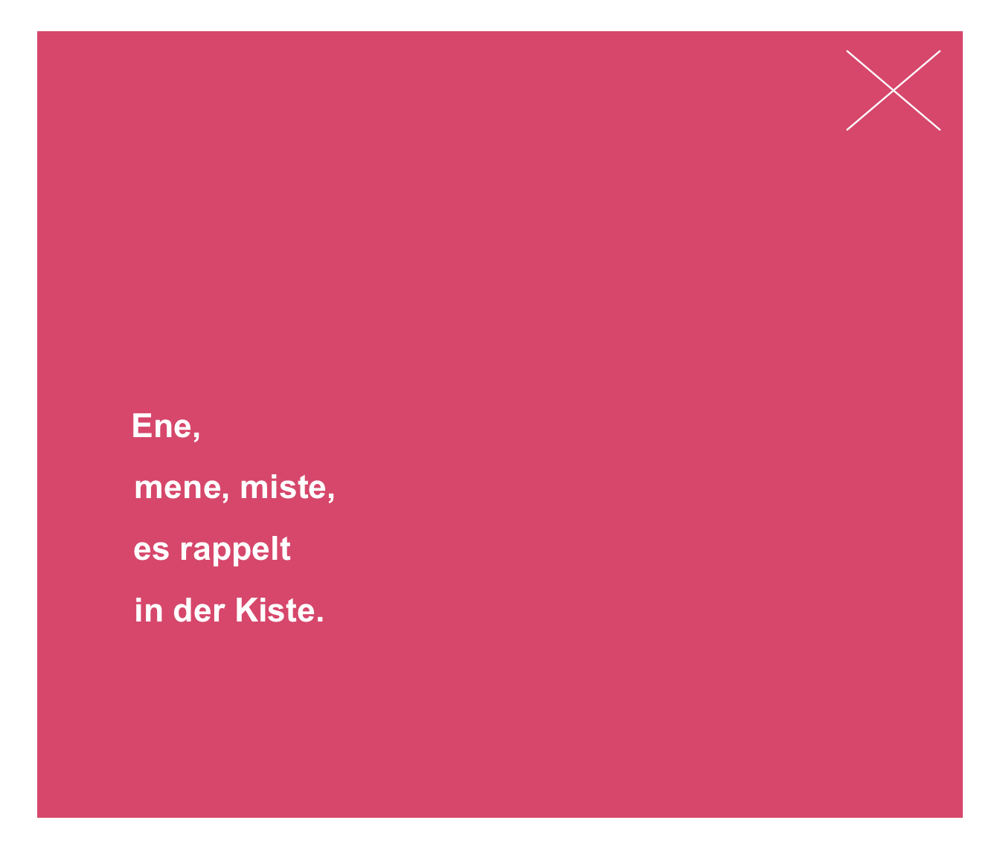
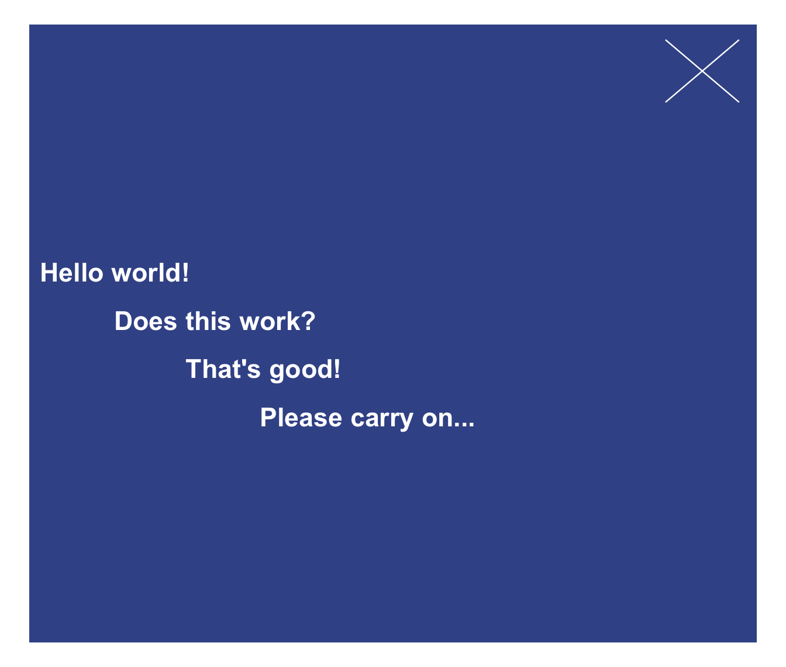
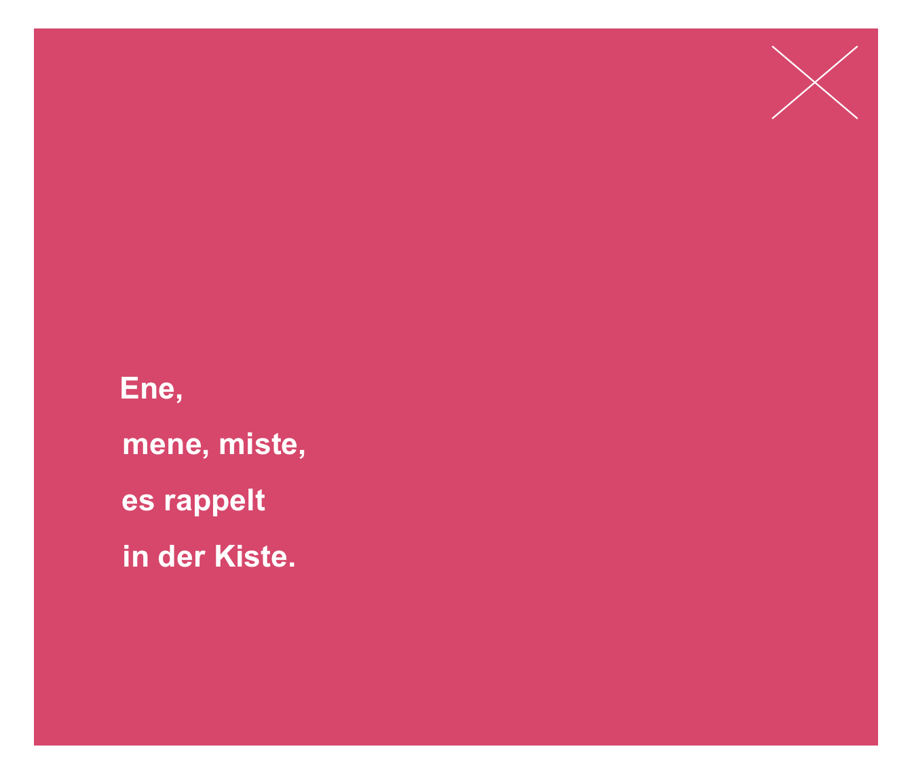
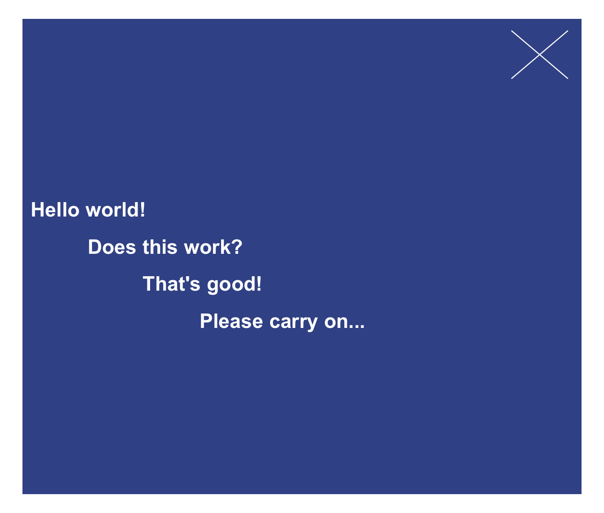

post plots 1 or more text strings (provided as a character vector labels)
to an (existing or new) xbox.
Usage
post(
labels,
x = 0.03,
y = 0.55,
x_layout = NA,
y_layout = "even",
col = "white",
col_bg = Seeblau,
cex = 1,
font = 1,
new_plot = "none"
)Arguments
- labels
A character vector specifying the text labels to be plotted.
- x
A numeric vector of x-coordinates at which the text labels in
labelsshould be written. If the lengths ofxandydiffer, the shorter one is recycled. Default:x = .03.- y
A numeric vector of y-coordinates at which the text labels in
labelsshould be written. If the lengths ofxandydiffer, the shorter one is recycled. Default:y = .55.- x_layout
An optional numeric vector or character string to control the horizontal positions of
labels. Numeric values are interpreted as increments to values ofxand recycled (to enable stepwise or alternating patterns). 3 character string options are:"center"(i.e., center wrt. first label or plot center),"left"(i.e., left wrt. first label or plot center),"right"(i.e., right wrt. first label or plot center). Default:x_layout = NA(i.e., using values ofx).- y_layout
A numeric value or character string to control the vertical positions of
labels. Numeric values are interpreted as increments to values ofy[1]and recycled (to enable stepwise or alternating patterns). 2 character string options are:"even"(i.e., even distribution of labels across available y-space) and"flush"(i.e., no space between adjacent labels, i.e.,y_layout = 0). Default:y_layout = "even".- col
The color(s) of the text label(s). Default:
col_lbl = "white".- col_bg
The background color(s) of the
xbox. Default:col_bg = Seeblau.- cex
Numeric character expansion factor(s), multiplied by
par("cex")to yield the character size(s). Default:cex = 1.0.- font
The font type(s) to be used. Default:
font = 1(i.e., plain text).- new_plot
Should a new plot be generated? Set to
"xbox"to plot to a basicxbox(with square dimensions, i.e.,dim = c(1, 1)). Default:new_plot = "none"(i.e., assumes a pre-existingxbox).
Details
The positions of the text elements in labels can be specified by
providing their coordinates (as x and y arguments) or
by providing an initial position and an y_layout (see below).
Text formatting parameters (like col, col_bg, cex, font)
are recycled to match length(labels).
post uses the base graphics system graphics::.
Examples
# Create a new xbox:
post(labels = "This is a test.", new_plot = "xbox",
cex = 1.2, font = 2, col_bg = pal_seeblau[[5]])
# Add text to an existing xbox:
post(labels = c("More text follows here,",
"yet another line here,",
"and even more here."),
y = .4, y_layout = .04,
new_plot = "none")
 # Using x_layout and y_layout:
post(labels = c("Ene,", "mene, miste,", "es rappelt", "in der Kiste."),
cex = 1.4, font = 2, col = "white", col_bg = Pinky,
x = .1, y = .5, x_layout = "left", y_layout = .05, new_plot = "xbox")

post(labels = c("Hello world!", "Does this work?", "That's good!", "Please carry on..."),
cex = 1.4, font = 2, col = "white", col_bg = Karpfenblau,
x = .01, y = .6, x_layout = .10, y_layout = .05, new_plot = "xbox")

# Using x_layout and y_layout:
post(labels = c("Ene,", "mene, miste,", "es rappelt", "in der Kiste."),
cex = 1.4, font = 2, col = "white", col_bg = Pinky,
x = .1, y = .5, x_layout = "left", y_layout = .05, new_plot = "xbox")

post(labels = c("Hello world!", "Does this work?", "That's good!", "Please carry on..."),
cex = 1.4, font = 2, col = "white", col_bg = Karpfenblau,
x = .01, y = .6, x_layout = .10, y_layout = .05, new_plot = "xbox")
